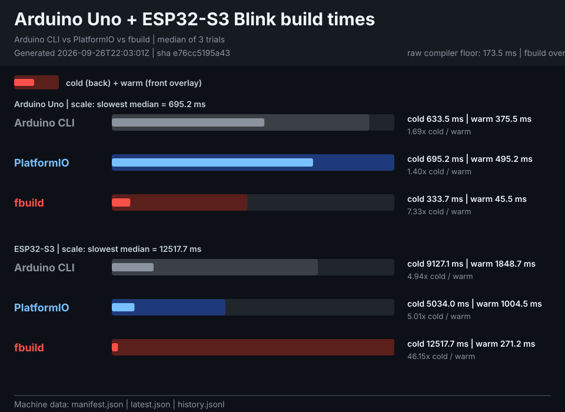

fbuild Blink build benchmark
All three tools compile the same Arduino Uno bench/blink/blink.ino. Cold removes project outputs, reusable framework objects, compiler-object caches, and Arduino/PlatformIO download/HTTP caches while retaining installed packages/toolchains and fbuild package archives. Warm is the immediate no-change rebuild. The narrower warm bar overlays the cold bar.

| Tool | Cold median | Warm median | Cold / warm | Version |
|---|---|---|---|---|
| Arduino CLI | 643.164 ms | 332.494 ms | 1.93x | arduino-cli Version: 1.5.0 Commit: dd407d42d Date: 2026-05-19T14:07:51Z |
| PlatformIO | 860.842 ms | 613.710 ms | 1.40x | PlatformIO Core, version 6.1.19 |
| fbuild | 2533.220 ms | 249.872 ms | 10.14x | fbuild 2.5.15 |
Machine-readable data
- manifest.json — stable discovery index for agents
- latest.json — metadata, raw trials, and medians
- history.jsonl — rolling 365-run history